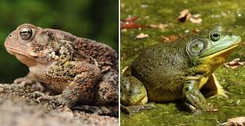

Uganda is home to a diverse range of wildlife, thanks to its varied ecosystems, which include savannas, forests, wetlands, and mountains. The country's rich biodiversity makes it a popular destination for nature enthusiasts, birdwatchers, and eco-tourists. Here’s a glimpse of what Uganda’s wildlife is like:
Mammals
Mountain Gorillas:
Uganda is famous for its mountain gorillas, especially in Bwindi Impenetrable National Park and Mgahinga Gorilla National Park. Uganda is one of the only places in the world where you can see these endangered primates in the wild.Big Five:
Uganda is home to several members of Africa’s “Big Five” — elephants, lions, buffalo, and leopards, which can be found in Queen Elizabeth National Park, Murchison Falls National Park, and Kidepo Valley National Park.
Chimpanzees:
Uganda has a significant population of chimpanzees, and you can see them in places like Kibale National Park, which is known as one of the best spots for chimpanzee tracking.
Antelopes and Gazelles:
Uganda has various species of antelopes, including impalas, kobs, topis, and duikers. These are commonly seen in savanna habitats, such as in Queen Elizabeth National Park. Other Wildlife: Uganda is home to other animals like zebras, giraffes, hyenas, crocodiles, hippos, and a variety of smaller mammals such as mongoose, civets, and warthogs.
Birds
Shoebill Stork:
Found in the swamps of Murchison Falls and other wetlands, the Shoebill is one of Uganda's most iconic birds.
Uganda's National Bird - The Grey Crowned Crane:
This beautiful bird is often seen in wetlands and grasslands.Endemic Species:
Uganda has several endemic bird species such as the Green-breasted Pitta, the Blue-headed Coucal, and the Uganda Kob, which can be found in specific regions like Bwindi.
Reptiles & Amphibians
Snakes:
Uganda has a variety of snakes, including venomous species like the black mamba, puff adder, and spitting cobras, though encounters are rare.
Crocodiles and Lizards:
Nile crocodiles are found in lakes and rivers, particularly in Murchison Falls and Queen Elizabeth National Park. There are also many species of lizards and geckos.Frogs and Toads:
The country's tropical climate supports many amphibians, including colorful frogs and toads that are often found in the rainforests and wetlands.
Endangered species in uganda

Rothschild’s Giraffe Status: Endangered (in Uganda) Habitat: Mainly in the north and east of the country, particularly in Murchison Falls National Park and Kidepo Valley National Park. Threats: Habitat loss, poaching, and human-wildlife conflict. Conservation Efforts: Uganda is actively involved in giraffe conservation programs and has reintroduced giraffes to some areas to increase their population.

Uganda has made significant progress in wildlife conservation over the past few decades, focusing on protecting endangered species, preserving habitats, and promoting sustainable tourism. The country has set clear conservation goals and achieved notable successes in this area.
Conservation Goals in Uganda Protection of Endangered Species: Focus on safeguarding iconic species such as mountain gorillas, chimpanzees, elephants, and rhinos through anti-poaching measures and habitat protection. Habitat Preservation: Ensure the protection of key ecosystems, including forests, wetlands, savannas, and grasslands, which are critical for biodiversity. Community Involvement: Engage local communities in conservation efforts, particularly through ecotourism, sustainable agriculture, and education. Promote Sustainable Tourism: Use wildlife tourism as a tool for conservation funding, while minimizing its impact on ecosystems. Combat Poaching and Illegal Trade: Strengthen law enforcement to tackle wildlife poaching and the illegal trade of animal products, such as ivory and rhino horns.
Key Achievements
Mountain Gorilla Conservation: Gorilla population growth: Uganda is home to around half of the world’s remaining mountain gorillas, mainly in Bwindi Impenetrable National Park and Mgahinga Gorilla National Park. The population has seen a steady increase due to successful conservation strategies such as habitat protection, growing tourism revenues, and community involvement. Gorilla tracking tourism: The introduction of gorilla tracking permits has not only raised awareness about conservation but has also helped fund the protection efforts. Revenue from permits is reinvested into conservation activities. Chimpanzee Protection: Kibale National Park and Budongo Forest: These areas are home to some of the largest populations of chimpanzees in the world. Uganda has established strict protection measures to prevent habitat loss and illegal hunting. Chimpanzee tracking has become an important eco-tourism activity, contributing to conservation funding. Rhino Reintroduction: Rhino Sanctuary: Uganda successfully reintroduced the black and white rhinos into the wild through the Ziwa Rhino Sanctuary, which has become an important breeding center. This initiative is part of the broader goal to restore rhino populations in Uganda, after they were wiped out by poaching in the 1980s.Incase you would want to support our cause head to this link Support